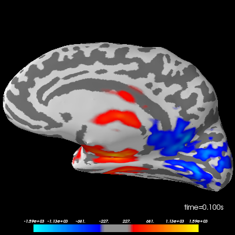

Note
Click here to download the full example code
Simulate raw data using subject anatomy¶
This example illustrates how to generate source estimates and simulate raw data
using subject anatomy with the mne.simulation.SourceSimulator class.
Once the raw data is simulated, generated source estimates are reconstructed
using dynamic statistical parametric mapping (dSPM) inverse operator.
# Author: Ivana Kojcic <ivana.kojcic@gmail.com>
# Eric Larson <larson.eric.d@gmail.com>
# Kostiantyn Maksymenko <kostiantyn.maksymenko@gmail.com>
# Samuel Deslauriers-Gauthier <sam.deslauriers@gmail.com>
# License: BSD (3-clause)
import os.path as op
import numpy as np
import mne
from mne.datasets import sample
print(__doc__)
# To simulate the sample dataset, information of the sample subject needs to be
# loaded. This step will download the data if it not already on your machine.
# Subjects directory is also set so it doesn't need to be given to functions.
data_path = sample.data_path()
subjects_dir = op.join(data_path, 'subjects')
subject = 'sample'
meg_path = op.join(data_path, 'MEG', subject)
# First, we get an info structure from the sample subject.
fname_info = op.join(meg_path, 'sample_audvis_raw.fif')
info = mne.io.read_info(fname_info)
tstep = 1 / info['sfreq']
# To simulate sources, we also need a source space. It can be obtained from the
# forward solution of the sample subject.
fwd_fname = op.join(meg_path, 'sample_audvis-meg-eeg-oct-6-fwd.fif')
fwd = mne.read_forward_solution(fwd_fname)
src = fwd['src']
# To simulate raw data, we need to define when the activity occurs using events
# matrix and specify the IDs of each event.
# Noise covariance matrix also needs to be defined.
# Here, both are loaded from the sample dataset, but they can also be specified
# by the user.
fname_event = op.join(meg_path, 'sample_audvis_raw-eve.fif')
fname_cov = op.join(meg_path, 'sample_audvis-cov.fif')
events = mne.read_events(fname_event)
noise_cov = mne.read_cov(fname_cov)
# Standard sample event IDs. These values will correspond to the third column
# in the events matrix.
event_id = {'auditory/left': 1, 'auditory/right': 2, 'visual/left': 3,
'visual/right': 4, 'smiley': 5, 'button': 32}
Out:
Read a total of 3 projection items:
PCA-v1 (1 x 102) idle
PCA-v2 (1 x 102) idle
PCA-v3 (1 x 102) idle
Reading forward solution from /home/circleci/mne_data/MNE-sample-data/MEG/sample/sample_audvis-meg-eeg-oct-6-fwd.fif...
Reading a source space...
Computing patch statistics...
Patch information added...
Distance information added...
[done]
Reading a source space...
Computing patch statistics...
Patch information added...
Distance information added...
[done]
2 source spaces read
Desired named matrix (kind = 3523) not available
Read MEG forward solution (7498 sources, 306 channels, free orientations)
Desired named matrix (kind = 3523) not available
Read EEG forward solution (7498 sources, 60 channels, free orientations)
MEG and EEG forward solutions combined
Source spaces transformed to the forward solution coordinate frame
366 x 366 full covariance (kind = 1) found.
Read a total of 4 projection items:
PCA-v1 (1 x 102) active
PCA-v2 (1 x 102) active
PCA-v3 (1 x 102) active
Average EEG reference (1 x 60) active
In order to simulate source time courses, labels of desired active regions need to be specified for each of the 4 simulation conditions. Make a dictionary that maps conditions to activation strengths within aparc.a2009s 1 labels. In the aparc.a2009s parcellation:
‘G_temp_sup-G_T_transv’ is the label for primary auditory area
‘S_calcarine’ is the label for primary visual area
In each of the 4 conditions, only the primary area is activated. This means that during the activations of auditory areas, there are no activations in visual areas and vice versa. Moreover, for each condition, contralateral region is more active (here, 2 times more) than the ipsilateral.
activations = {
'auditory/left':
[('G_temp_sup-G_T_transv-lh', 100), # label, activation (nAm)
('G_temp_sup-G_T_transv-rh', 200)],
'auditory/right':
[('G_temp_sup-G_T_transv-lh', 200),
('G_temp_sup-G_T_transv-rh', 100)],
'visual/left':
[('S_calcarine-lh', 100),
('S_calcarine-rh', 200)],
'visual/right':
[('S_calcarine-lh', 200),
('S_calcarine-rh', 100)],
}
annot = 'aparc.a2009s'
# Load the 4 necessary label names.
label_names = sorted(set(activation[0]
for activation_list in activations.values()
for activation in activation_list))
region_names = list(activations.keys())
# Define the time course of the activity for each region to activate. We use a
# sine wave and it will be the same for all 4 regions.
source_time_series = np.sin(np.linspace(0, 4 * np.pi, 100)) * 10e-9
Create simulated source activity¶
Here, SourceSimulator is used, which allows to
specify where (label), what (source_time_series), and when (events) event
type will occur.
We will add data for 4 areas, each of which contains 2 labels. Since add_data method accepts 1 label per call, it will be called 2 times per area. All activations will contain the same waveform, but the amplitude will be 2 times higher in the contralateral label, as explained before.
When the activity occurs is defined using events. In this case, they are taken from the original raw data. The first column is the sample of the event, the second is not used. The third one is the event id, which is different for each of the 4 areas.
source_simulator = mne.simulation.SourceSimulator(src, tstep=tstep)
for region_id, region_name in enumerate(region_names, 1):
events_tmp = events[np.where(events[:, 2] == region_id)[0], :]
for i in range(2):
label_name = activations[region_name][i][0]
label_tmp = mne.read_labels_from_annot(subject, annot,
subjects_dir=subjects_dir,
regexp=label_name,
verbose=False)
label_tmp = label_tmp[0]
amplitude_tmp = activations[region_name][i][1]
source_simulator.add_data(label_tmp,
amplitude_tmp * source_time_series,
events_tmp)
# To obtain a SourceEstimate object, we need to use `get_stc()` method of
# SourceSimulator class.
stc_data = source_simulator.get_stc()
Simulate raw data¶
Project the source time series to sensor space. Three types of noise will be added to the simulated raw data:
multivariate Gaussian noise obtained from the noise covariance from the sample data
blink (EOG) noise
ECG noise
The SourceSimulator can be given directly to the
simulate_raw() function.
raw_sim = mne.simulation.simulate_raw(info, source_simulator, forward=fwd,
cov=None)
raw_sim.set_eeg_reference(projection=True).crop(0, 60) # for speed
mne.simulation.add_noise(raw_sim, cov=noise_cov, random_state=0)
mne.simulation.add_eog(raw_sim, random_state=0)
mne.simulation.add_ecg(raw_sim, random_state=0)
# Plot original and simulated raw data.
raw_sim.plot(title='Simulated raw data')

Out:
Setting up raw simulation: 1 position, "cos2" interpolation
Event information stored on channel: STI 014
Setting up forward solutions
Computing gain matrix for transform #1/1
Simulating data for forward operator 1/0
Interval 0.000-1.665 sec
Interval 1.665-3.330 sec
Interval 3.330-4.995 sec
Interval 4.995-6.660 sec
Interval 6.660-8.325 sec
Interval 8.325-9.990 sec
Interval 9.990-11.655 sec
Interval 11.655-13.320 sec
Interval 13.320-14.985 sec
Interval 14.985-16.650 sec
Interval 16.650-18.315 sec
Interval 18.315-19.980 sec
Interval 19.980-21.644 sec
Interval 21.644-23.309 sec
Interval 23.309-24.974 sec
Interval 24.974-26.639 sec
Interval 26.639-28.304 sec
Interval 28.304-29.969 sec
Interval 29.969-31.634 sec
Interval 31.634-33.299 sec
Interval 33.299-34.964 sec
Interval 34.964-36.629 sec
Interval 36.629-38.294 sec
Interval 38.294-39.959 sec
Interval 39.959-41.624 sec
Interval 41.624-43.289 sec
Interval 43.289-44.954 sec
Interval 44.954-46.619 sec
Interval 46.619-48.284 sec
Interval 48.284-49.949 sec
Interval 49.949-51.614 sec
Interval 51.614-53.279 sec
Interval 53.279-54.944 sec
Interval 54.944-56.609 sec
Interval 56.609-58.274 sec
Interval 58.274-59.939 sec
Interval 59.939-61.604 sec
Interval 61.604-63.268 sec
Interval 63.268-64.933 sec
Interval 64.933-66.598 sec
Interval 66.598-68.263 sec
Interval 68.263-69.928 sec
Interval 69.928-71.593 sec
Interval 71.593-73.258 sec
Interval 73.258-74.923 sec
Interval 74.923-76.588 sec
Interval 76.588-78.253 sec
Interval 78.253-79.918 sec
Interval 79.918-81.583 sec
Interval 81.583-83.248 sec
Interval 83.248-84.913 sec
Interval 84.913-86.578 sec
Interval 86.578-88.243 sec
Interval 88.243-89.908 sec
Interval 89.908-91.573 sec
Interval 91.573-93.238 sec
Interval 93.238-94.903 sec
Interval 94.903-96.568 sec
Interval 96.568-98.233 sec
Interval 98.233-99.898 sec
Interval 99.898-101.563 sec
Interval 101.563-103.228 sec
Interval 103.228-104.892 sec
Interval 104.892-106.557 sec
Interval 106.557-108.222 sec
Interval 108.222-109.887 sec
Interval 109.887-111.552 sec
Interval 111.552-113.217 sec
Interval 113.217-114.882 sec
Interval 114.882-116.547 sec
Interval 116.547-118.212 sec
Interval 118.212-119.877 sec
Interval 119.877-121.542 sec
Interval 121.542-123.207 sec
Interval 123.207-124.872 sec
Interval 124.872-126.537 sec
Interval 126.537-128.202 sec
Interval 128.202-129.867 sec
Interval 129.867-131.532 sec
Interval 131.532-133.197 sec
Interval 133.197-134.862 sec
Interval 134.862-136.527 sec
Interval 136.527-138.192 sec
Interval 138.192-139.857 sec
Interval 139.857-141.522 sec
Interval 141.522-143.187 sec
Interval 143.187-144.852 sec
Interval 144.852-146.516 sec
Interval 146.516-148.181 sec
Interval 148.181-149.846 sec
Interval 149.846-151.511 sec
Interval 151.511-153.176 sec
Interval 153.176-154.841 sec
Interval 154.841-156.506 sec
Interval 156.506-158.171 sec
Interval 158.171-159.836 sec
Interval 159.836-161.501 sec
Interval 161.501-163.166 sec
Interval 163.166-164.831 sec
Interval 164.831-166.496 sec
Interval 166.496-168.161 sec
Interval 168.161-169.826 sec
Interval 169.826-171.491 sec
Interval 171.491-173.156 sec
Interval 173.156-174.821 sec
Interval 174.821-176.486 sec
Interval 176.486-178.151 sec
Interval 178.151-179.816 sec
Interval 179.816-181.481 sec
Interval 181.481-183.146 sec
Interval 183.146-184.811 sec
Interval 184.811-186.476 sec
Interval 186.476-188.140 sec
Interval 188.140-189.805 sec
Interval 189.805-191.470 sec
Interval 191.470-193.135 sec
Interval 193.135-194.800 sec
Interval 194.800-196.465 sec
Interval 196.465-198.130 sec
Interval 198.130-199.795 sec
Interval 199.795-201.460 sec
Interval 201.460-203.125 sec
Interval 203.125-204.790 sec
Interval 204.790-206.455 sec
Interval 206.455-208.120 sec
Interval 208.120-209.785 sec
Interval 209.785-211.450 sec
Interval 211.450-213.115 sec
Interval 213.115-214.780 sec
Interval 214.780-216.445 sec
Interval 216.445-218.110 sec
Interval 218.110-219.775 sec
Interval 219.775-221.440 sec
Interval 221.440-223.105 sec
Interval 223.105-224.770 sec
Interval 224.770-226.435 sec
Interval 226.435-228.100 sec
Interval 228.100-229.764 sec
Interval 229.764-231.429 sec
Interval 231.429-233.094 sec
Interval 233.094-234.759 sec
Interval 234.759-236.424 sec
Interval 236.424-238.089 sec
Interval 238.089-239.754 sec
Interval 239.754-241.419 sec
Interval 241.419-243.084 sec
Interval 243.084-244.749 sec
Interval 244.749-246.414 sec
Interval 246.414-248.079 sec
Interval 248.079-249.744 sec
Interval 249.744-251.409 sec
Interval 251.409-253.074 sec
Interval 253.074-254.739 sec
Interval 254.739-256.404 sec
Interval 256.404-257.378 sec
155 STC iterations provided
Done
Adding average EEG reference projection.
1 projection items deactivated
Average reference projection was added, but has not been applied yet. Use the apply_proj method to apply it.
Adding noise to 366/376 channels (366 channels in cov)
Sphere : origin at (0.0 0.0 0.0) mm
radius : 90.0 mm
Source location file : dict()
Assuming input in millimeters
Assuming input in MRI coordinates
Positions (in meters) and orientations
2 sources
blink simulated and trace stored on channel: EOG 061
Setting up forward solutions
Computing gain matrix for transform #1/1
Sphere : origin at (0.0 0.0 0.0) mm
radius : 90.0 mm
Source location file : dict()
Assuming input in millimeters
Assuming input in MRI coordinates
Positions (in meters) and orientations
1 sources
ecg simulated and trace not stored
Setting up forward solutions
Computing gain matrix for transform #1/1
Reconstruct simulated source time courses using dSPM inverse operator¶
Here, source time courses for auditory and visual areas are reconstructed separately and their difference is shown. This was done merely for better visual representation of source reconstruction. As expected, when high activations appear in primary auditory areas, primary visual areas will have low activations and vice versa.
method, lambda2 = 'dSPM', 1. / 9.
epochs = mne.Epochs(raw_sim, events, event_id)
inv = mne.minimum_norm.make_inverse_operator(epochs.info, fwd, noise_cov)
stc_aud = mne.minimum_norm.apply_inverse(
epochs['auditory/left'].average(), inv, lambda2, method)
stc_vis = mne.minimum_norm.apply_inverse(
epochs['visual/right'].average(), inv, lambda2, method)
stc_diff = stc_aud - stc_vis
brain = stc_diff.plot(subjects_dir=subjects_dir, initial_time=0.1,
hemi='split', views=['lat', 'med'])


- 
Out:
320 matching events found
Applying baseline correction (mode: mean)
Not setting metadata
Created an SSP operator (subspace dimension = 4)
4 projection items activated
Converting forward solution to surface orientation
Average patch normals will be employed in the rotation to the local surface coordinates....
Converting to surface-based source orientations...
[done]
Computing inverse operator with 364 channels.
364 out of 366 channels remain after picking
Selected 364 channels
Creating the depth weighting matrix...
203 planar channels
limit = 7262/7498 = 10.020865
scale = 2.58122e-08 exp = 0.8
Applying loose dipole orientations. Loose value of 0.2.
Whitening the forward solution.
Created an SSP operator (subspace dimension = 4)
Computing data rank from covariance with rank=None
Using tolerance 3.3e-13 (2.2e-16 eps * 305 dim * 4.8 max singular value)
Estimated rank (mag + grad): 302
MEG: rank 302 computed from 305 data channels with 3 projectors
Using tolerance 4.7e-14 (2.2e-16 eps * 59 dim * 3.6 max singular value)
Estimated rank (eeg): 58
EEG: rank 58 computed from 59 data channels with 1 projector
Setting small MEG eigenvalues to zero (without PCA)
Setting small EEG eigenvalues to zero (without PCA)
Creating the source covariance matrix
Adjusting source covariance matrix.
Computing SVD of whitened and weighted lead field matrix.
largest singular value = 5.49264
scaling factor to adjust the trace = 1.64e+19
Preparing the inverse operator for use...
Scaled noise and source covariance from nave = 1 to nave = 5
Created the regularized inverter
Created an SSP operator (subspace dimension = 4)
Created the whitener using a noise covariance matrix with rank 360 (4 small eigenvalues omitted)
Computing noise-normalization factors (dSPM)...
[done]
Applying inverse operator to "auditory/left"...
Picked 364 channels from the data
Computing inverse...
Eigenleads need to be weighted ...
Computing residual...
Explained 99.4% variance
Combining the current components...
dSPM...
[done]
Preparing the inverse operator for use...
Scaled noise and source covariance from nave = 1 to nave = 3
Created the regularized inverter
Created an SSP operator (subspace dimension = 4)
Created the whitener using a noise covariance matrix with rank 360 (4 small eigenvalues omitted)
Computing noise-normalization factors (dSPM)...
[done]
Applying inverse operator to "visual/right"...
Picked 364 channels from the data
Computing inverse...
Eigenleads need to be weighted ...
Computing residual...
Explained 99.5% variance
Combining the current components...
dSPM...
[done]
Using control points [ 204.9476386 323.62258808 1588.3393872 ]